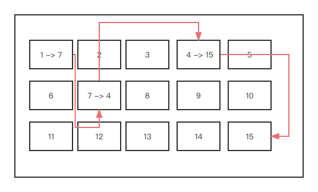

文件管理之文件系统
文件系统介绍¶
文件系统filesystem是操作系统内核中负责组织管理磁盘的程序. 是OS的一部分.
在起初给vm虚机安装centos操作系统时,我们对硬盘进行了分区 eg / /boot swap
每一个分区/分隔槽都需要文件系统进行管理. 常见的 文件系统 有 xfs、ext4 和 btrfs.
可以每个分区都用不同的文件系统,但通常都是一样的.. centos7里用的是xfs; centos6及以前用的是ext4.
xfs、ext4都支持日志
[了解知识]
吐槽: 听到egon说他以前做过cf,别懵逼了..就是指日志文件系统CLFS!(´▽｀) Please be professional！
xfs、ext4都支持日志,日志用于记录操作.内存往磁盘里写数据的时候,会先将相应的操作记录在日志里.
Q:如何打造一个极致的CLFS日志文件系统？
日志文件系统先记录操作,再完成数据的写入..断电后可根据日志继续未完成的操作..
A:准备多块盘,做RAID(前文"计算机硬件组成"部分有介绍).用两三块固态做日志,其他盘存数据.
CLFS的特点是写数据先往做日志的固态里写,日志里会记录相应的操作,再根据这些操作往其他盘里写真正的数据.
正因为日志里有相应的操作记录,所以可通过日志来完成数据的回复.(解决系统崩溃或者掉电数据丢失的问题)
Ps: 提一嘴,做raid将多块磁盘合成一块,对inode的总量没有影响,inode归文件系统管,是一定的.
xfs为啥是现在的主流？
1> xfs的底层效率比ext4高;
2> xfs支持大而多的文件!
3> btrfs(B-tree文件系统)的读写速度是最快的,但它对cpu内存的占用非常大.而且极不稳定.

Ps: 作为专业人士,提分区的概念比较少,都是说哪哪个文件系统,要知道,每个文件系统一定是关联一个具体的分区.
"""
文件系统 文件系统 文件系统
分区1 分区2 分区3
"""
[root@localhost opt]# ll /dev/sda
brw-rw---- 1 root disk 8, 0 7月 4 22:54 /dev/sda
[root@localhost opt]# ll /dev/sda1
brw-rw---- 1 root disk 8, 1 7月 4 22:54 /dev/sda1
[root@localhost opt]# ll /dev/sda2
brw-rw---- 1 root disk 8, 2 7月 4 22:54 /dev/sda2
"""
df 即disk filesystem之意 查看的是硬盘的文件系统
注意观察结果,/dev/sda1这一分区是在文件系统这一列下面的!
/dev/sda1占在《硬盘的角度》指的是第1个分隔槽.
/dev/sda1占在《软件的角度》是一个文件系统.
挂载点打个比方,硬盘是个水桶,用木板进行了隔断,划分出每个区域都安装了个水龙头用于出水.
通俗点来讲挂载点就是指每个分区最上层的那个文件夹.. 就是分区关联的文件夹 eg: / /boot ..
-h 磁盘容量,以M、G..更美观
-i 磁盘inode号使用情况
-T 多加一列 文件系统的类型
ps: mount命令可查看挂载的所有文件系统信息..
"""
[root@localhost opt]# df -h -T
文件系统 类型 容量 已用 可用 已用% 挂载点
devtmpfs devtmpfs 470M 0 470M 0% /dev
tmpfs tmpfs 487M 0 487M 0% /dev/shm
tmpfs tmpfs 487M 15M 472M 4% /run
tmpfs tmpfs 487M 0 487M 0% /sys/fs/cgroup
/dev/mapper/centos-root xfs 17G 4.6G 13G 27% /
/dev/sda1 xfs 1014M 212M 803M 21% /boot
tmpfs tmpfs 98M 40K 98M 1% /run/user/0
[root@localhost opt]# df -i -T
文件系统 类型 Inode 已用(I) 可用(I) 已用(I)% 挂载点
devtmpfs devtmpfs 120231 401 119830 1% /dev
tmpfs tmpfs 124455 1 124454 1% /dev/shm
tmpfs tmpfs 124455 961 123494 1% /run
tmpfs tmpfs 124455 16 124439 1% /sys/fs/cgroup
/dev/mapper/centos-root xfs 8910848 139846 8771002 2% /
/dev/sda1 xfs 524288 347 523941 1% /boot
tmpfs tmpfs 124455 23 124432 1% /run/user/0
文件系统工作原理¶
文件 = 文件元数据 + 实际内容
block的分类¶
硬盘的最小存取单位 -- 扇区(512kb)
操作系统的最小存取单位 -- block块(4k)
Ps:操作系统中的文件系统负责将磁盘的多扇区组织成一个个的block块,这样OS就可以一次性读取一个"块"(block);
即一次性连续读取多个扇区. "块"的大小,最常见的是4KB,即连续八个sector组成一个block.
在文件系统眼里,一个分区就是一堆block块！文件系统将它们进行了分类:
1> superblock 超级区块 一个: 记录整个档案系统的整体信息,包括inode与block的总量、使用量、剩余量等
创建文件时,会跟superblock申请inode和data block.
2> inode区块 多个: 放置文件的 元信息
元数据 - 权限(rwx)、拥有者、群组、时间参数等.
包括一个文件被分配的一个inode号以及该文件对应的一个或多个data block块号码;
Ps:说在前面,一个文件只能有一个inode号,但多个文件的inode号可以相同 -- 硬链接
3> data block区块 剩下的 :
若是文件夹 放置子文件名或者子文件夹名的 inode号;
若是文件 放置文件的 实际内容 ;
Ps: 每个inode 与data block 都有自己的编号
一个文件(不管是文件还是目录)占用一个inode块以及一个或者多个data block块!
注意哦! 一个文件夹/目录也算是一个文件! 里面存储的是子文件名和子文件夹名的inode编号!
So, 在linux里根本就没有文件夹一说,是为了方便阐述才这样说的,实际上应该叫做 目录文件!
这样称呼是因为文件夹里存放的是子文件的inode编号,就像是书的目录一样！
文件的查找¶
cat /etc/passwd 的整体过程如下:
[root@localhost opt]# ls -i /
78150 bin 50331763 home 16778318 mnt 8877 run 16777288 tmp
64 boot 81 lib 33746122 opt 78154 sbin 33732779 usr
3 dev 83 lib64 1 proc 50331764 srv 50331713 var
16777281 etc 84 media 33574977 root 1 sys
[root@localhost opt]# ls -di /
64 /
[root@localhost opt]# ls -di /etc/
16777281 /etc/
[root@localhost opt]# ls -i /etc/passwd
17500057 /etc/passwd

Ps: 这张逻辑图中inode块的block编号是假设的,对整体的推导流程没有影响..
step 1> 首先, 系统找到这个文件名对应的inode号码;
step 2> 其次, 通过inode号码,获取inode信息;
step 3> 最后, 根据inode信息, 找到文件数据所在的block,读出数据
cat /etc/passwd 查找的整体过程 根文件夹/ ; 文件夹/etc ; 文件/etc/passwd
1> OS的文件系统先去问问super block,知道了根目录/的inode编号是64,
找到编号为64的inode块,在该元信息里看到其对应的data block编号是555;
找到根目录/对应编号为555的data block,里面/etc文件夹对应的inode号是16777281;
2> 文件系统找到编号为16777281的inode块,查询到其对应的data block编号是666,
在编号为666的data block,查询到/etc/passwd文件对应的inode号是17500057;
3> 文件系统找到编号为17500057的inode块,查询到其对应的data block编号是666、777、888,
进而读出数据..
Ps: 查找的过程实际上还要考虑有无权限哦(´▽｀)!!
不管是xfs还是ext,底层的原理都是这样的,只不过,xfs在此之上做了一些优化提高了读写效率..
xfs、ext文件系统都被称作 索引式文件系统(indexed allocation)！
文件的删除¶
Q: 若需要删除 /etc/passwd 文件,删除过程是怎样的呢？
A: 实际上没有删除这一说, 硬盘的所有操作都是覆盖!
"删除"此文件,会导致该文件对应的inode号17500057,以及对应的data block块777 888 999在superblock里都标记为free自由空闲状态;表明当有其他数据文件往硬盘中写的时候,free状态的inode号和data block块可以分别存其他文件的元数据和内容.
也就是说,删除一个文件时,文件的元数据和内容都还在硬盘里！
还会将目录文件/etc的data block里面, /etc/passwd文件与对应的inode号17500057的绑定关系清理掉!
So,回复数据的原理,就是将未删除之前的绑定关系进行恢复.
数据回复一定能回复回来吗？不一定! 因为被标记为free的块被分配走了就没办法啦.数据被覆盖了.
所以数据回复时会问,删除有多久啦,在此之间有没有做其他操作..
文件系统扩展¶
inode信息¶
文件的 inode 中文译名为 "索引节点" , 是UNIX 操作系统中的一种数据结构, 其本质是结构体.
[stat命令]
可以用 stat 命令, 查看某个文件的inode信息!
[root@localhost opt]# stat /etc/
文件："/etc/"
大小：8192 块：24 IO 块：4096 目录
设备：fd00h/64768d Inode：16777281 硬链接：144
权限：(0755/drwxr-xr-x) Uid：( 0/ root) Gid：( 0/ root)
最近访问：2022-07-18 09:44:50.868295267 +0800
最近更改：2022-07-15 22:22:00.039036820 +0800
最近改动：2022-07-15 22:22:00.039036820 +0800
创建时间：-
[root@localhost opt]# stat /etc/passwd
文件："/etc/passwd"
大小：2351 块：8 IO 块：4096 普通文件
设备：fd00h/64768d Inode：17500057 硬链接：1
权限：(0644/-rw-r--r--) Uid：( 0/ root) Gid：( 0/ root)
最近访问：2022-07-18 07:33:46.014207025 +0800
最近更改：2022-07-15 10:14:51.948530819 +0800
最近改动：2022-07-15 10:14:51.955530994 +0800
创建时间：-
从根本上讲,inode中存放的是除了文件的名字以及文件真实内容之外所有有关文件的信息/元数据(metadata)!
● inode 编号
● 用来识别文件类型,以及用于stat C函数的模式信息
● 链接数,即有多少文件名指向这个inode
● 属主的ID(UID)
● 属主的组ID(GID)
● 文件的字节数
● 文件所使用的磁盘块的实际数目
● 文件的时间戳,共有三个:
ctime指inode上一次变动的时间;
mtime指文件内容上一次变动的时间;
atime指文件上一次打开的时间。
● 指向数据块的指针
敲黑板! Linux系统内部不使用文件名, 而是用inode号码来识别文件. 每个inode都有一个号码.
对于系统来说,文件名只是inode号码便于识别的别称或者绰号.
[三种时间]
详解,atime、mtime、ctime的区别！
1> atime(access time):[访问文件内容]的时间.
对文件进行一次读操作,它的访问时间就会改变.
eg: cat、more等操作,但是像之前的stat还有ls命令对atime是不会有影响的.
因为stat、ls访问的是文件的元数据,没有访问文件的内容！！
2> mtime(modify time):[修改文件内容]的时间.
文件的内容被最后一次修改的时间,我们经常用的ls -l命令显示出来的文件时间就是这个时间.
当用vim对文件进行编辑之后保存,它的mtime就会相应的改变;
eg: echo aa >> a.sh 或vim a.txt 修改内容
3> ctime(change time):[修改文件]的时间.
通俗点,文件但凡有一点改动,不管是元数据还是内容的改动都会导致ctime的改变.
eg: 当使用chmod、chown等改变文件属性的操作是会改变文件的ctime的. chmod +x a.txt
○ 使用cat命令查看文件后,文件atime会变更
○ 使用vim命令打开文件只要在扩展模式下w后,文件atime、mtime、ctime都会变更.
若vim打开后随便咋编辑咋查看只要没有w保存,都只是在对内存里的数据进行操作,没有写入硬盘.
即只要在扩展模式下q或q!,只会变更atime.
【冷知识】
也许你会惊奇的发现第一次后再连续几次cat/vim前后的atime都没有变化,这是因为linux自带的优化机制导致的:
cache 缓存 (读) -- 硬盘中的数据在内存中缓存;
buffer 缓冲区 (写) -- 攒一波再往硬盘中写.
PS:在前文的计算机硬件组成中有阐述.
提一嘴:sync命令会将buffer缓冲区的数据强制往硬盘中写.
[inode大小]
注意哦! inode也会消耗硬盘空间的.

[目录项]
Linux系统中, 目录(directory)也是一种文件. 打开目录,实际上就是打开目录文件.
目录文件的结构非常简单, 就是一系列目录项(dirent)的列表.
每个目录项由两部分组成: 所包含文件的文件名以及该文件名对应的inode号码!
FAT文件系统¶
U盘使用的文件/档案系统一般为FAT格式.
它具有以下的特点:
1> FAT没有区分superblock、inode、data block, 就是一堆简单的block!但依旧会对block进行编号.
是没有xfs、ext那样的索引的, 一个block块里存放一堆(名字对应的下一跳的数字)的组合.
2> 正因为FAT没有inode的存在, 所以FAT没有办法将这个档案的所有block在一开始就读取出来.
每个block号码都记录在前一个block当中.只能一跳一跳的查找.太慢太笨拙了 TnT.

假设档案的资料依序写入 1->7->4->15 这四个block号码中.
提一嘴,为啥会这样写入呢？同一时间往硬盘的写操作很多导致的.是按照顺序穿插着来的.
这个档案系统没有办法一口气就知道四个block的号码,它得一个一个的将block读出后,才会知道下一个block在何处!
如果同一个档案资料写入的block分散的太过厉害跨度太大时,
则我们的磁盘读取头将无法在磁盘转一圈就读到所有的资料.因此磁盘就会多转好几圈才能完整的读取到这个档案的内容!
【磁盘碎片整理】
正因为档案写入的block太过于离散了,导致文件的读取效率很差,所以需要定期进行碎片整理！
说白了,就是将文件存的相应的紧凑一点.block块连续一点.
Q: 那么像xfs、ext文件系统需要进行磁盘整理吗？
A: 它们是索引文件系统,通常是不需要的.
但是如果档案系统使用太久,常常删除/编辑/新增档案话,是可能会造成档案资料太过于离散的问题
此时就需要进行重整一下！
Ps: windows常见的文件系统 FAT、NTFS、VFAT、MSDOS...
磁盘满的两种情况¶
常识: 只要权限够, 磁盘上有空间一定可以创建文件. 这个是错的!! (X)
▲ 文件系统/分区的inode号
[root@localhost opt]# df -i -T
文件系统 类型 Inode 已用(I) 可用(I) 已用(I)% 挂载点
devtmpfs devtmpfs 120231 401 119830 1% /dev
tmpfs tmpfs 124455 1 124454 1% /dev/shm
tmpfs tmpfs 124455 961 123494 1% /run
tmpfs tmpfs 124455 16 124439 1% /sys/fs/cgroup
/dev/mapper/centos-root xfs 8910848 139846 8771002 2% /
/dev/sda1 xfs 524288 347 523941 1% /boot
tmpfs tmpfs 124455 23 124432 1% /run/user/0
▲ 文件系统/分区的磁盘容量
[root@localhost opt]# df -h -T
文件系统 类型 容量 已用 可用 已用% 挂载点
devtmpfs devtmpfs 470M 0 470M 0% /dev
tmpfs tmpfs 487M 0 487M 0% /dev/shm
tmpfs tmpfs 487M 15M 472M 4% /run
tmpfs tmpfs 487M 0 487M 0% /sys/fs/cgroup
/dev/mapper/centos-root xfs 17G 4.6G 13G 27% /
/dev/sda1 xfs 1014M 212M 803M 21% /boot
tmpfs tmpfs 98M 40K 98M 1% /run/user/0
情况一: 磁盘上还有空间,但磁盘上大量的小文件导致inode号没了.
i=30000;while true;do touch /boot/$i.txt;echo $i.txt;((i++));done
当/boot 分区的inode使用完,再创建文件会失败,会提示设备上没有空间.
黑科技,运行上方的测试后,打开另一个终端,实时监测/boot分区inode号使用情况:
while true;do df -i;sleep 0.5;clear;done 达到视觉上刷新的效果,实则不是刷新.
Ps: 若不sleep0.5秒, cpu的消耗会很大很大, 得让它休息0.5秒,不然会烧脑 Hhhh.
情况二: inode号还有很多,但某个文件很大,磁盘的容量被占满了.
dd if=/dev/zero of=/boot/test.txt bs=300M count=1
dd if=/dev/zero of=/abc.txt bs=10M count=1
cp abc.txt /boot/ 失败,会提示设备上没有空间!
[解决方案]
1> 大量的小文件问题:可能会使inode耗尽, 使得文件文法创建(磁盘利用率低)
So,对于小文件比较多的场景,可将inode和data block划分小一点;
若innode已经不够用了,可将小文件备份到其他分区...
2> 大文件问题: 一个文件占用多个data block,使得文件读写速率慢.可将data block划分大点.使用xfs文件系统.
若容量已经不够用了. 思路一,将大文件打包备份走;思路二,使用软硬链接!!!
软硬链接¶
硬链接¶
硬链接(Hard Link)相当于给一个文件起了一个 别名 , 不同的文件名可以操作同一份数据.
ln [原文件] [目标文件]
1> 对硬链接的源文件或目标文件内容进行修改,会影响到所有文件名;
2> 硬链接文件与源文件具有相同inode,但文件名不同:
即一个文件只能有一个inode号,但多个文件的inode号可以相同
3> 删除硬链接或者原文件之一,不影响另一个文件名的访问, 除非所有的都删除掉.
So,硬连接 允许一个文件拥有多个有效路径名,这样用户就可以建立硬链接到重要文件,以防止“误删”.
4> 删除所有硬链接, 数据会在被磁盘检查或者新数据写入的时候删除回收.
5> 通过rm –f 删除硬链接
6> 目录不可创建硬链接, 并且硬链接无法跨区

Ps: 硬链接有点像python里函数传递中针对可变类型的引用传递...
"""
a.txt的inode号是35589975,`ll a.txt`可得知它有1个硬链接.
"""
[root@localhost opt]# cat a.txt
123
[root@localhost opt]# ls -i a.txt
35589975 a.txt
[root@localhost opt]# ll a.txt
-rw-r--r-- 1 root root 4 7月 19 10:44 a.txt
"""
用`ln`命令为a.txt创建一个硬链接,这样的话,a.txt与b.txt inode号、硬链接数、文件内容都一样！
即一个inode号关联了两个文件名,代表同一份数据！
"""
[root@localhost opt]# ln a.txt b.txt
[root@localhost opt]# ls -i b.txt
35589975 b.txt
[root@localhost opt]# ll a.txt
-rw-r--r-- 2 root root 4 7月 19 10:44 a.txt
[root@localhost opt]# ll b.txt
-rw-r--r-- 2 root root 4 7月 19 10:44 b.txt
[root@localhost opt]# cat b.txt
123
"""
对硬链接文件或原文件内容进行修改,会影响到所有文件名
"""
[root@localhost opt]# echo 666 >> a.txt
[root@localhost opt]# cat a.txt
123
666
[root@localhost opt]# cat b.txt
123
666
"""
删除原文件a.txt, 硬链接文件b.txt还能继续使用
"""
[root@localhost opt]# rm -rf a.txt
[root@localhost opt]# ll b.txt
-rw-r--r-- 1 root root 8 7月 19 10:51 b.txt # 注意,硬链接数变为了1
"""
目录不可创建硬链接
"""
[root@localhost opt]# mkdir ./aaa
[root@localhost opt]# ln ./aaa ./bbb
ln: "./aaa": 不允许将硬链接指向目录
软链接¶
软链接(Symbolic Link)文件2相当于是文件1的一个 快捷方式 .
文件2指向文件1的路径,而不是文件1的inode号码,文件1的inode"硬链接数"不会因此发生变化.ln –s [原文件] [目标文件]
1> 对软链接的源文件或目标文件内容进行修改, 会影响到所有文件名;
2> 软链接文件与源文件具有不同的inode号
3> 删除软连接文件的源文件, 软链接文件将无法使用, 应该也一起删除掉,以便回收
4> rm –f 删除软链接
5> 可以对目录创建软链接, 并且软链接可以跨分区

"""
使用命令`ln -s`为c.txt文件创建一个软链接d.txt.
相当于创建了一个快捷方式. 文件d.txt的存在依赖于c.txt
"""
[root@localhost opt]# cat c.txt
123
[root@localhost opt]# ln -s c.txt d.txt
[root@localhost opt]# ls -i c.txt
34107380 c.txt
[root@localhost opt]# ls -i d.txt
35311703 d.txt
[root@localhost opt]# ll c.txt
-rw-r--r-- 1 root root 4 7月 19 16:22 c.txt
[root@localhost opt]# ll d.txt
lrwxrwxrwx 1 root root 5 7月 19 16:22 d.txt -> c.txt
[root@localhost opt]# echo 666 >> c.txt
[root@localhost opt]# cat c.txt
123
666
[root@localhost opt]# cat d.txt
123
666
"""
原文件c.txt删掉了,其软链接d.txt就不能用啦
"""
[root@localhost opt]# rm -rf c.txt
[root@localhost opt]# cat d.txt
cat: d.txt: 没有那个文件或目录
"""
可以对目录创建软链接
"""
[root@localhost opt]# mkdir ./aaa
[root@localhost opt]# echo 111 > ./aaa/1.txt
[root@localhost opt]# ln -s ./aaa ./bbb
[root@localhost opt]# ll
总用量 0
drwxr-xr-x 2 root root 19 7月 19 17:07 aaa
lrwxrwxrwx 1 root root 5 7月 19 17:07 bbb -> ./aaa
[root@localhost opt]# cat ./aaa/1.txt
111
[root@localhost opt]# cat ./bbb/1.txt
111
# 删除软链接/快捷方式bbb目录对aaa目录没有影响
[root@localhost opt]# rm -rf ./bbb
[root@localhost opt]# ls aaa
1.txt
# 删除软链接/快捷方式bbb下的1.txt文件对aaa目录有影响!!!!!!!!!!!!!!!!!!!!!!!
[root@localhost opt]# ll
总用量 0
drwxr-xr-x 2 root root 19 7月 19 17:13 aaa
[root@localhost opt]# ln -s ./aaa ./bbb
[root@localhost opt]# rm -rf ./bbb/1.txt
[root@localhost opt]# ll aaa
总用量 0
Q/A¶
Q1: 为啥硬链接不能跨分区,软链接可以？为啥目录文件不能创建硬链接,可以创建软链接?
A1: 换句话来说,硬链接的创建具有局限性: 同一分区 + 普通文件
Ps: linux判断某个路径绑定的分区是从右往左找的,直到该目录绑定了分区.
/etc/sysconfig/network-scripts/ifcfg-ens33 直到找到关联分区的根/文件夹..
硬链接的本质是大家指向同一个inode号,关联同一份数据;所以硬链接仅限于在同一个分区里分配..
很容易想到分区1的10号inode与分区2的10号inode指向的data block可不是一样的..
而对目录文件创建硬链接意味着对该目录文件的子文件和子目录文件都用创建硬链接,开销很大..
查阅资料,允许目录的硬链接可能会打破文件系统目录的有向无环图结构, 可能创建目录循环, 这可能会导致fsck以及其他一些遍历文件树的软件出错... TnT 可以说人话嘛？听求不懂... 不深究了
而软链接支持跨分区,是因为软链接的本质是指向源文件,不指向inode号...
源文件与目标文件/软链接文件的inode号不同
Q2: 配置文件修改完后,一定要重启对应的软件才能生效,为什么?
A2: 软件启动起来后,需要读取配置文件的信息,以指定的方式去运行.
读文件,不是通过文件名读取的,需要通过inode号读取..
vim一改动配置文件,inode号就变了.. 而正在运行的软件读取的是更改之前的内容..读不到更改的内容.
So,需要重新启动软件,找到那个新的inode号,读取修改后的数据.
Ps: 有些软件不用重启, 称为"平滑重启". 也就是这个软件整体没有重启,但有一部分是重启重新读取文件了的..
"""
可以发现,vim修改配置文件后,test.conf的inode号会变!
为什么？vim的原理导致的,具体过程如下:
1>文件内容一次性读入内存,一边修改会一边将改动写入硬盘上创建的临时文件.test.conf.swp文件里面去
2>改动完后,:w,文件系统会删除硬盘中的test.conf源文件; .test.conf.swp文件通过cp操作改名为源文件的名字
3>:q后,临时文件.test.conf.swp删除..
"""
[root@localhost opt]# vim test.conf
[root@localhost opt]# cat test.conf
123
[root@localhost opt]# ls -i test.conf
34532550 test.conf
[root@localhost opt]# vim test.conf
[root@localhost opt]# cat test.conf
123
456
[root@localhost opt]# vim test.conf
[root@localhost opt]# ls -i test.conf
35311703 test.conf
【验证vim原理的操作过程】
"""
可以发现test.conf文件前后的inode号是改变了的.
"""
[root@localhost opt]# ls -i 1.txt
34107380 1.txt
[root@localhost opt]# ls -i test.conf
35311703 test.conf
[root@localhost opt]# rm -rf test.conf
[root@localhost opt]# cp 1.txt test.conf
[root@localhost opt]# ls -i test.conf
34532550 test.conf
Q3: 总结下软硬链接的异同.
A3: 相同点 - 修改一个文件的内容,其它链接文件都跟着改.
不同点 -
1> 硬链接多个文件inode号一样,软链接的多个文件inode号不一样;
2> 删除源文件, 硬链接任然可用,但软链接失效
3> 硬链接只能对普通文件做,而且不能跨分区.
软链接可以对普通文件和目录文件做,而且可以跨分区.
软链接解决磁盘满¶
简单理解, 硬盘分区的挂载点就是软链接..
假设/boot文件夹满了(准确点说,是/boot挂载点对应的文件系统/分区sda1 的硬盘空间满了)..
也就是说,创建新文件 /boot/data/a.txt 从右往左找, 该路径应该存放于sda1分区里..
但是sda1分区满了.. 创建文件失败!
于是乎, 我们买一块硬盘,分区做好文件系统, 即新建一个分区 sdb1, 其挂载点为 /boot/data
这样的话, /boot/data/a.txt 此路径下的a.txt文件就会存放与 sdb1分区里..
/dev/sda1 ----------- /boot
/dev/sdb1 ----------- /boot/data
文件路径一定要注意辨别在哪个分区!！
在vm虚机上可以设置新增硬盘..重启生效.
计算机上是支持热插拔的,计算机开机状态,插入硬盘也能识别!(类似于我通过USB接口插入了一块移动硬盘,能识别成功)
"""
可以发现有sda sdb两块硬盘
○ sda1 sda2 是sda这块硬盘做的两个分区
○ sdb不分区的话,可以整体算一个分区,但需要对其做文件系统,并对其添加挂载
"""
[root@localhost ~]# ll /dev/sda # 连续Tab键提示
sda sda1 sda2 sdb
## centos7里推荐用xfs
[root@localhost ~]# mkfs.xfs /dev/sdb
... ... ...
[root@localhost ~]# mount /dev/sdb /boot/data
◆ 文件路径一定要区分分区!
"""
sdb硬盘的挂载点为/boot/data文件目录
往此路径/boot/data/a.txt的a.txt文件里写入内容
通过umount命令取消挂载
再cat查看,会发现a.txt的内容消失
why？挂载取消后,此路径会去/boot挂载点对应的sba1分区中找数据.而不是sdb硬盘分区中找.
而恰好sba1分区的此路径下有a.txt文件,但此文件的文件大小为0.
"""
[root@localhost ~]# echo "Hhhhh" > /boot/data/a.txt
[root@localhost ~]# cat /boot/data/a.txt
Hhhhh
# umount /boot/data 也是一样的效果
[root@localhost ~]# umount /dev/sdb
[root@localhost ~]# cat /boot/data/a.txt
[root@localhost ~]# ll /boot/data/a.txt
-rw-r--r-- 1 root root 0 7月 20 23:30 /boot/data/a.txt
[root@localhost ~]# echo "123456" > /boot/data/a.txt
[root@localhost ~]# cat /boot/data/a.txt
123456
[root@localhost ~]# mount /dev/sdb /boot/data
[root@localhost ~]# cat /boot/data/a.txt
Hhhhh